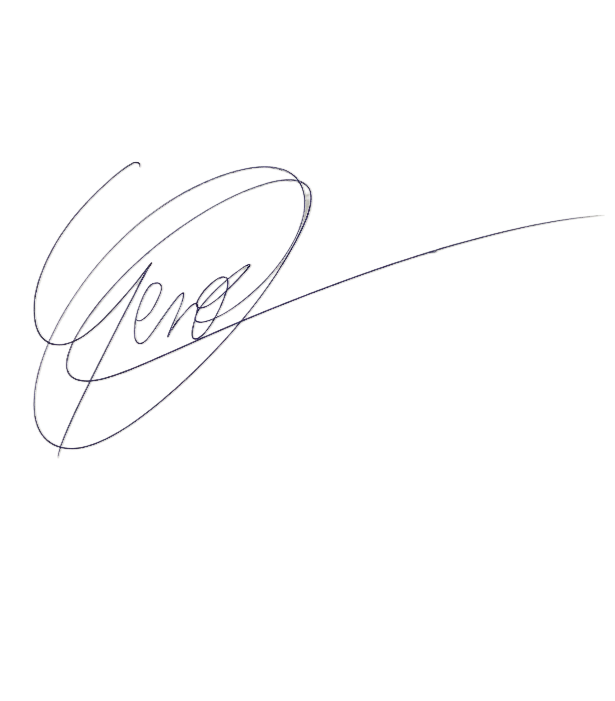

GEAUDIO
Quand l'audio est au centre
Bienvenue sur mon site, ici tu peux accéder à mes dernières créations, en savoir plus sur moi et déposer tes fichiers.

Bienvenue sur mon site, ici tu peux accéder à mes dernières créations, en savoir plus sur moi et déposer tes fichiers.
